Parent Functions
Linear
Formula:
\[y = x\]
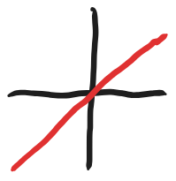
\[\textnormal{Domain: } (-\infty, \infty)
\textnormal{Range: } (-\infty, \infty)\]
Square / Quadratic
Formula:
\[y = x^2\]
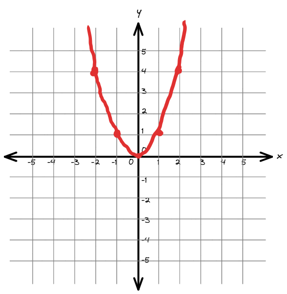
\[\textnormal{Domain: } (-\infty, \infty)
\textnormal{Range: } (0, \infty)\]
Square Root
Formula:
\[y = \sqrt(x)\]
\[\textnormal{Domain: } (0, \infty)
\textnormal{Range: } (0, \infty)\]
Cubic
Formula:
\[y = x^3\]
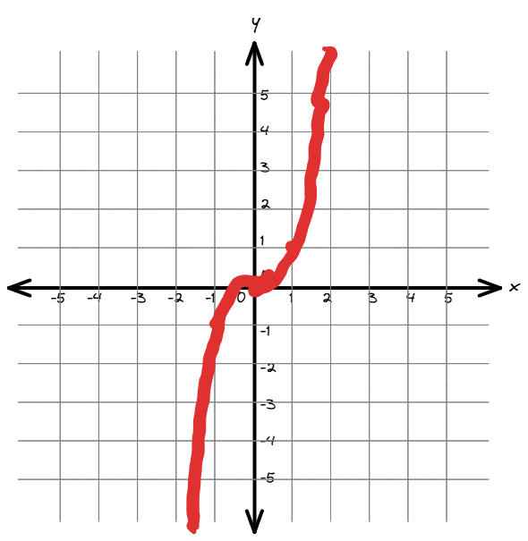
\[\textnormal{Domain: } (-\infty, \infty)
\textnormal{Range: } (-\infty, \infty)\]
Cubic Root
Formula:
\[y = \sqrt[3]{x}\]
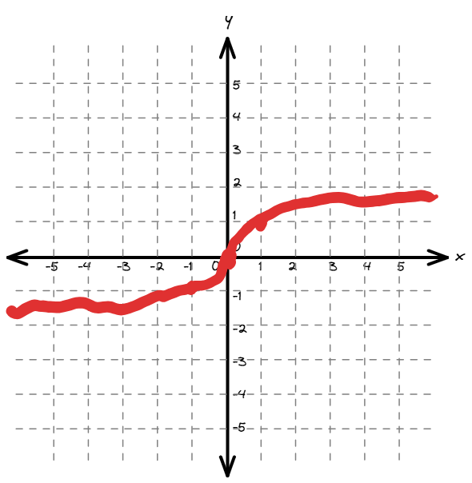
\[\textnormal{Domain: } (-\infty, \infty)
\textnormal{Range: } (-\infty, \infty)\]
Reciprocal
Formula:
\[y = \frac{1}{x}\]
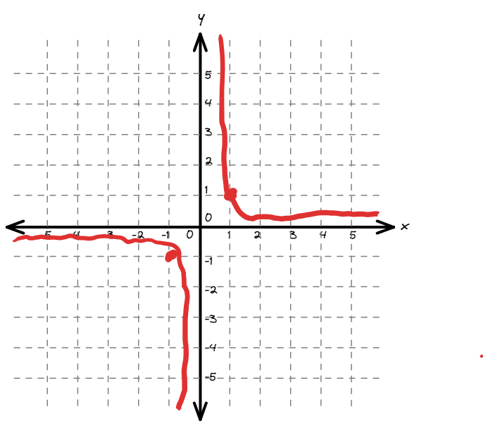
\[\textnormal{Domain: } (-\infty, 0) U (0, \infty)
\textnormal{Range: } (-\infty, \infty)\]
Absolute Value
Formula:
\[y = |x|\]
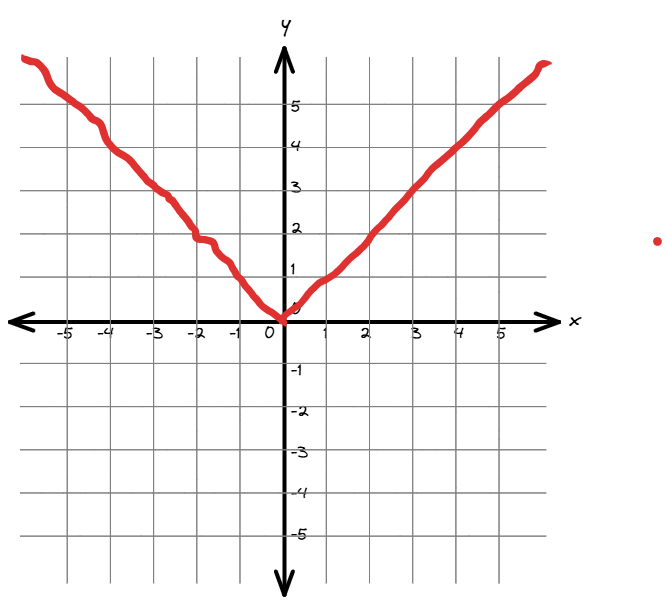
\[\textnormal{Domain: } (-\infty, \infty)
\textnormal{Range: } (0, \infty)\]
Exponential
Formula:
\[y = e^x\]
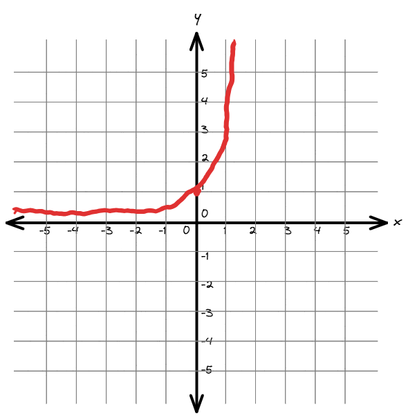
\[\textnormal{Domain: } (-\infty, \infty)
\textnormal{Range: } (0, \infty)\]
Basic Natural Log
Formula:
\[y = ln(x)\]
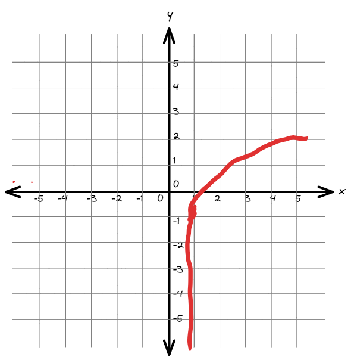
\[\textnormal{Domain: } (0, \infty)
\textnormal{Range: } (-\infty, \infty)\]
Semicircle
Formula:
\[\begin{split}r^2 &= x^2 + y^2 \\
y &= \sqrt(r^2-x^2) \\
y &= \sqrt(a-x^2) \\
y &= \sqrt(1-x^2)\end{split}\]
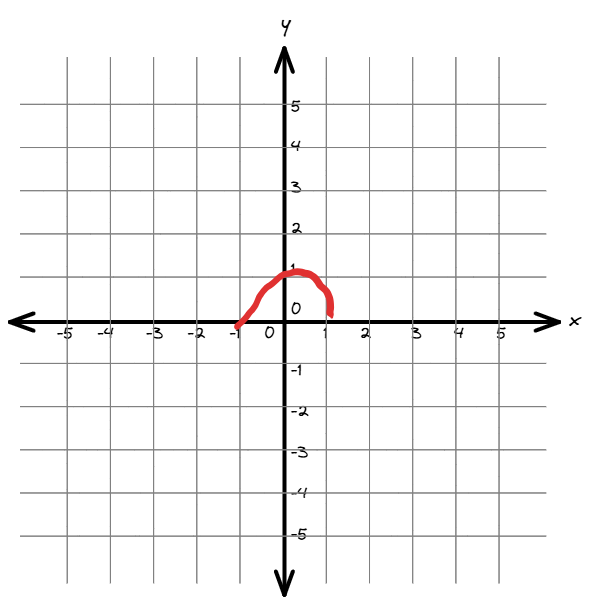
\[\textnormal{Domain: } [-1, 1]
\textnormal{Range: } [0, 1]\]
Square Reciprocal
Formula:
\[y = \frac{1}{x^2}\]
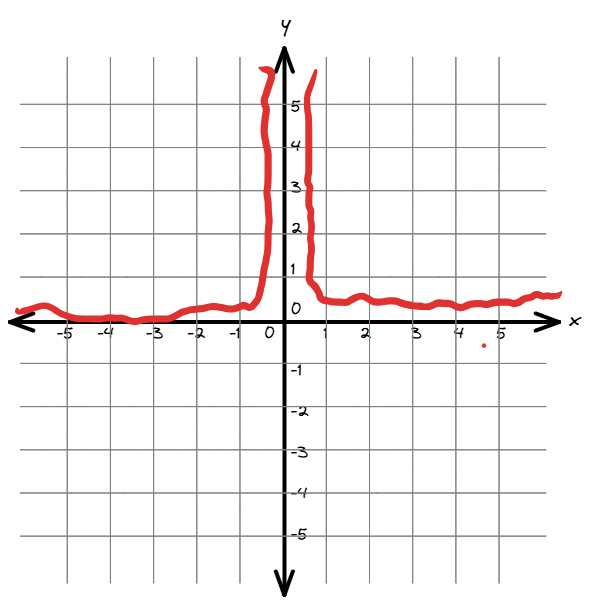
\[\textnormal{Domain: } (-\infty, 0) U (0, \infty)
\textnormal{Range: } (0, \infty]\]
Semicircle
Formula:
\[\begin{split}r^2 &= x^2 + y^2 \\
y &= \sqrt(r^2-x^2) \\
y &= \sqrt(a-x^2) \\
y &= \sqrt(1-x^2)\end{split}\]
\[\textnormal{Domain: } [-1, 1]
\textnormal{Range: } [0, 1]\]
Hyperbola
Formula:
\[\begin{split}c^2 &= x^2 - y^2 \\
y &= \sqrt(x^2-c^2) \\
y &= \sqrt(x^2-a)\end{split}\]
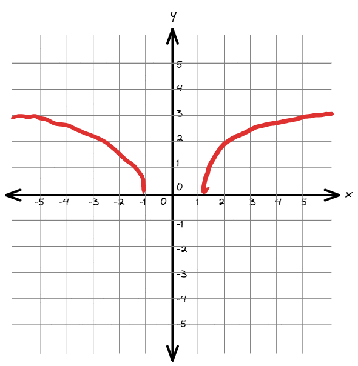
\[\textnormal{Domain: } (-\infty, -1] U [1, \infty)
\textnormal{Range: } (0, \infty)\]
Shifts
A horizontal shift is when the input of a function (x) is modified. This shifts the function to the left. For example \(f(x-3)\) will shift the function 3 to the right.
A vertical shift is when the output of a function (y) is modified. This shifts the function up. For example \(f(x) + 3\) will shift the function 3 up.
Effects on Domain and Range
A horizontal shift will affect the domain while a vertical shift will affect the range.
Example of horizontal shift
\[y = \frac{1}{(x-2)^2}\]
Shifts the function two to the right. Domain becomes :math:`(-infty, 2) U (2, infty) `
Example of vertical shift
\[y = \frac{1}{x^2} + 2\]
Shifts the function two up. Range becomes :math:`(2, infty) `
Even and odd
To find if function even or odd, plug in -x into the function.
If is is an even function: \(f(-x) = f(x)\)
If is is an odd function: \(f(-x) = -f(x)\)
Example of odd function (\(g(x) = \frac{1}{x}\)):
\[\begin{split}g(-x) &= \frac{1}{-x} \\
g(-x) &= - \frac{1}{x} \\
g(-x) &= -g(x)\end{split}\]
Example of even (\(g(x) = x^2\)):
\[\begin{split}g(-x) &= (-x)^2 \\
g(-x) &= x^2 \\
g(-x) &= g(x)\end{split}\]